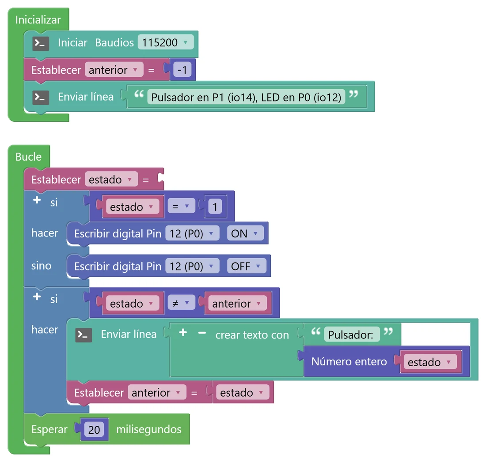
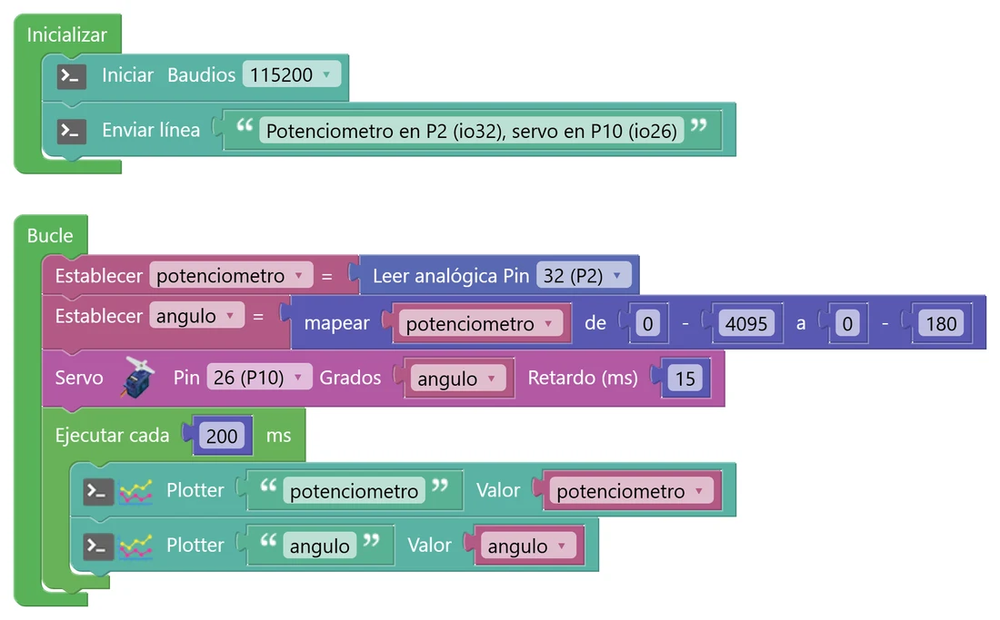
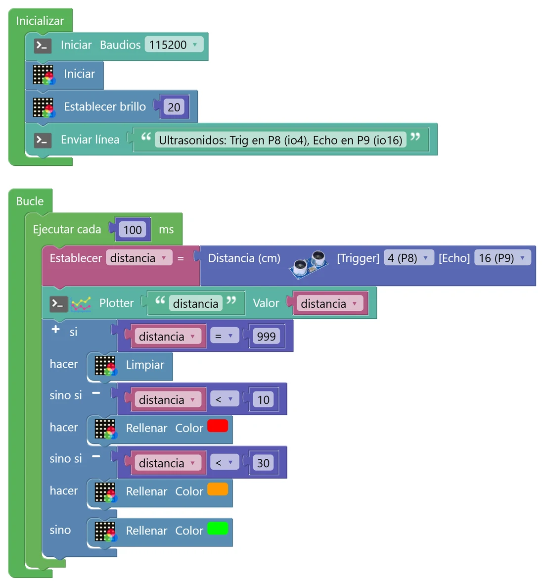

N9 La placa de expansión: conectar el mundo exterior
Hasta ahora todo estaba dentro de la placa. Con la placa de expansión Keyestudio (la «shield») puedes conectar sensores y actuadores de fuera: LED, pulsadores, potenciómetros, un servomotor, un sensor de distancia por ultrasonidos y todos los módulos del kit de 37 sensores. Es el paso que te prepara para el proyecto de robótica: saber montar bien antes de programar.
🎯 Objetivo
- Montar la placa en la shield, alimentarla bien y elegir la tensión de cada lado con los jumpers.
- Conectar módulos de 3 pines (G-V-S) sin equivocarte y saber a qué pin va cada uno.
- Leer entradas digitales y analógicas externas y manejar salidas: un LED y un servomotor.
- Medir distancias con un sensor de ultrasonidos.
🧠 Antes de empezar: cómo se monta
1 · La placa en su ranura
La micro:STEAMakers entra en la ranura de la shield igual que lo haría una micro:bit, con la cara de la matriz hacia el lado que indica la serigrafía de la shield. Debe entrar recta y hasta el fondo. Si dudas, pregunta antes de encender: una placa al revés no funciona.
2 · La alimentación
La shield necesita su propia alimentación: sin alimentarla no hay 5 V en sus conectores, y el servo o el sensor de ultrasonidos no funcionarán. En el aula la alimentamos con un cable micro USB en su conector, desde un puerto USB del ordenador o desde una batería externa (powerbank). Para programar y ver la consola, la placa sigue conectada al ordenador con su cable de siempre.
3 · Los jumpers V1 y V2
La shield tiene dos filas de conectores: la izquierda (P0 a P9), alimentada por V1, y la derecha (P10 a P20), alimentada por V2. Cada jumper elige si ese lado da 3,3 V o 5 V. En este nivel usaremos:
| Lado | Jumper | Qué conectamos | Por qué |
|---|---|---|---|
| Izquierdo (P0–P9) | V1 = 3,3 V | LED, pulsador, potenciómetro, LDR, ultrasonidos | Los pines del ESP32 trabajan a 3,3 V: una señal de 5 V en una entrada, y sobre todo en una analógica, puede estropearla. |
| Derecho (P10–P20) | V2 = 5 V | Servo | El motor del servo necesita 5 V para tener fuerza. Su cable de señal solo recibe órdenes, no envía tensión a la placa. |
4 · Los conectores G-V-S
Cada pin de la shield tiene tres patillas: G (tierra, GND, el negativo), V (alimentación) y S (señal, la que lee o escribe el programa). Los módulos del kit las tienen marcadas como −, + y S. Conecta cada una con la suya: G con −, V con +, S con S. Si das la vuelta al cable, el módulo no funciona o se calienta.
💡 Para entenderlo: los enchufes de casa
Un conector G-V-S es como un enchufe con tres agujeros: dos dan la energía (G y V, como los dos polos del enchufe) y el tercero lleva el «mensaje» (S). En casa hay aparatos de 230 V y cargadores que bajan a 5 V; aquí pasa algo parecido con los jumpers: cada lado de la shield da la tensión que necesitan los módulos de ese lado. Si enchufas un aparato a la tensión equivocada, puede no funcionar o quemarse.
Los módulos del kit de 37 sensores
Todos los módulos del kit se conectan igual. Lo único que tienes que averiguar de cada uno es qué tipo de señal da o necesita, y eso te dice qué bloque usar (Entrada/Salida o el bloque con su nombre en Sensores y Actuadores):
| Tipo | Ejemplos típicos del kit | Bloque | Pin |
|---|---|---|---|
| Entrada digital (0 o 1) | pulsador, inclinación, sensor Hall (imán), obstáculo por infrarrojos | Leer digital | P0–P2, P4, P6–P10, P12 |
| Entrada analógica (0 a 4095) | potenciómetro, fotorresistencia (LDR), sensor de llama o de humedad (salida A) | Leer analógica | P2 (mejor), P0, P1, P10 |
| Salida digital | LED, relé, zumbador activo | Escribir digital (ALTO/BAJO) | cualquiera libre |
| Salida PWM (intensidad) | LED con brillo regulable, LED RGB | Led PWM o Escribir analógica | cualquiera libre |
Mira la serigrafía de cada módulo: si tiene un pin A (analog) o D/S (digital), te da la pista. Y comprueba siempre en la consola qué valor da en reposo y qué valor da cuando actúa: algunos módulos dan 1 al activarse y otros dan 0.
🧩 Programa 1 · Primeras conexiones: pulsador y LED
El montaje más sencillo para comprobar que todo está bien: un pulsador externo en P1 enciende un LED externo en P0. Además, la consola escribe el valor del pulsador cada vez que cambia, para que sepas cómo responde tu módulo.

🛠️ Móntalo paso a paso
- Montaje (todo apagado): jumper V1 en 3,3 V; módulo LED en P0 y módulo pulsador en P1, respetando G-V-S. Conecta el micro USB de la shield y el USB de la placa.
- Variables estado y anterior. En Inicializar: consola, anterior = −1 (para que la primera lectura se escriba siempre) y un mensaje.
- En Bucle: estado = Leer digital Pin 14 (P1) (Entrada/Salida). Un si … sino: si estado = 1, Escribir digital Pin 12 (P0) ALTO; si no, BAJO.
- Otro si: si estado ≠ anterior → Enviar línea «Pulsador: » + estado y anterior = estado. Termina con Esperar 20 ms.
- ¿Qué valor da tu pulsador en reposo y cuál al pulsarlo? Si va al revés (el LED se enciende cuando no pulsas), ¿qué cambiarías en el programa? Busca también la casilla Invertir del bloque Pulsador de Sensores.
- Cambia el pulsador por otro módulo digital del kit (inclinación, Hall con un imán, obstáculo…). ¿Funciona el mismo programa sin tocar nada? ¿Qué te dice eso?
- Sin el «si estado ≠ anterior», ¿cuántas líneas escribiría la consola por segundo?
🧩 Programa 2 · Un servo que obedece al potenciómetro
Un servomotor es un motor que no da vueltas: gira hasta el ángulo que le pidas (de 0º a 180º) y se queda ahí haciendo fuerza. Es el motor de las barreras de aparcamiento, de los timones de los aviones de radiocontrol y de los brazos robóticos. En este programa, al girar el potenciómetro, el servo copia el movimiento.

🛠️ Móntalo paso a paso
- Montaje (todo apagado): potenciómetro en P2 (lado izquierdo, V1 = 3,3 V). Jumper V2 en 5 V y servo en P10: cable marrón a G, rojo a V y naranja (señal) a S.
- Variables potenciometro y angulo. En Bucle: potenciometro = Leer analógica Pin 32 (P2) (Entrada/Salida).
- angulo = mapear potenciometro de 0–4095 a 0–180 (Matemáticas). Es la regla de tres del N4 y del N7.
- Bloque Servo (Motor › Servo) con Pin 26 (P10), grados = angulo y retardo 15 ms (lo que tarda en llegar).
- Ejecutar cada 200 ms: dos Plotter, potenciometro y angulo. Abre el Serial Plotter y gira el potenciómetro.
💡 Para entenderlo: cómo sabe el servo a qué ángulo ir
Dentro del servo hay un motor pequeño, unos engranajes que lo hacen más lento y fuerte, y un potenciómetro como el tuyo pegado al eje. El servo compara el ángulo que le pides con el que marca su potenciómetro interno y mueve el motor hasta que coinciden. A eso se le llama control en lazo cerrado: mide, compara y corrige, como haces tú al aparcar mirando por el retrovisor. La orden le llega en forma de pulsos: un pulso de 1 ms significa 0º y uno de 2 ms, 180º (más o menos, según el modelo).
- ¿El servo llega de verdad a 0º y a 180º? ¿Hace algún ruido en los extremos? ¿Por qué no conviene dejarlo forzando en un tope?
- Quita el micro USB de la shield (con la placa conectada al ordenador). ¿Qué hace el servo? Explica por qué.
- Haz que el servo se mueva al revés que el potenciómetro cambiando solo los números del mapear.
🧩 Programa 3 · Medidor de distancia por ultrasonidos
El sensor HC-SR04 funciona como un murciélago: emite un pitido de ultrasonidos (demasiado agudo para que lo oigamos), espera el eco y mide cuánto tarda en volver. Como el sonido viaja a unos 343 m/s, con ese tiempo calcula la distancia. Este programa la envía al plotter y pone la matriz verde, ámbar o roja según lo cerca que esté el obstáculo.

🛠️ Móntalo paso a paso
- Montaje (todo apagado): el HC-SR04 tiene 4 patillas, así que se conecta con 4 cables hembra-hembra: VCC a V de P8, GND a G de P8, Trig a S de P8 y Echo a S de P9. Lado izquierdo, con V1 en 3,3 V.
- Variable distancia. En Inicializar: consola y matriz con brillo 20.
- Ejecutar cada 100 ms: distancia = Distancia (cm) (Sensores, bloque de ultrasonidos) con Trigger 4 (P8) y Echo 16 (P9). Plotter de distancia.
- Un si con tres ramas y un sino: si distancia = 999 → Limpiar (no hay eco); si < 10 → rojo; si < 30 → ámbar; si no → verde.
- Mide con una regla tres distancias (10, 30 y 50 cm) y compáralas con lo que da el sensor. ¿Cuánto se equivoca?
- ¿Qué pasa si el obstáculo es una tela, una esponja o una pared inclinada? ¿Por qué crees que ocurre?
- ¿A partir de qué distancia sale 999? (Pista: el programa solo espera el eco 18 milisegundos.)
🚀 Retos
Luz automática
Cambia el potenciómetro por el módulo LDR (en P2) y haz que el LED de P0 se encienda cuando hay poca luz. Primero mira en el plotter qué valores da tu LDR con luz y tapado (¿sube o baja al taparlo?) y elige el umbral con esas medidas, como en el N4.
Sensor de aparcamiento
Como el de los coches: por debajo de 50 cm, el zumbador pita cada vez más deprisa cuanto más cerca está el obstáculo, y por debajo de 5 cm suena un pitido largo. Pista: la pausa entre pitidos puede ser distancia × 20 ms.
Barrera automática
Une el servo y los ultrasonidos: cuando llega un «coche» a menos de 10 cm, la barrera (el servo) sube a 90º, espera 3 segundos y baja. La matriz muestra cuántos coches han pasado. Pruébalo y busca el fallo: ¿qué pasa si el coche se queda parado debajo de la barrera? Arréglalo.
🔧 Bajo el capó: pines especiales, servos y ultrasonidos en C++
#include <ESP32Servo.h> Servo servo_26; double fnc_ultrasonic_distance(int _t, int _e) { digitalWrite(_t, HIGH); delayMicroseconds(10); digitalWrite(_t, LOW); // pitido de 10 µs unsigned long dur = pulseIn(_e, HIGH, 18000); // espera el eco como mucho 18 ms if (dur == 0) return 999.0; // sin eco return (dur / 57); // µs → cm } void setup() { servo_26.attach(26); ... } void loop() { servo_26.write(angulo); delay(15); ... }
📏 ¿Por qué dividir entre 57?
El sonido recorre 343 m/s = 0,0343 cm/µs. El eco va y vuelve, así que la distancia es la mitad: d = t × 0,0343 ÷ 2 = t ÷ 58,3. La librería redondea a 57. Como dur es un entero, la división también es entera: el sensor da centímetros sin decimales. Esperar como mucho 18 000 µs equivale a un obstáculo a unos 3 m: si está más lejos (o el eco se pierde), el programa se rinde y devuelve 999.
📌 Pines con truco
No todos los pines son iguales. El ESP32 tiene dos convertidores analógicos: los del ADC2 (P0, P1, P10…) dejan de funcionar cuando se usa la radio WiFi, y en el N10 usaremos la radio. Por eso, para sensores analógicos, lo más seguro es P2 (io32), del ADC1. Además, P0 (io12) es un pin de «arranque»: si un módulo lo pone a 1 justo al encender, la placa puede no arrancar. Por eso en P0 conectamos una salida (el LED) y no un sensor.
El servo se controla con PWM: 50 pulsos por segundo cuya anchura (de 1 a 2 ms aprox.) marca el ángulo. La librería ESP32Servo usa un temporizador del ESP32 para generarlos sin que tu programa tenga que hacer nada.
🔎 ¿Lo has entendido?
Cuando termines, haz una captura con tu puntuación para el porfolio.
📁 Al porfolio
- Una foto de cada montaje en la que se vean bien las conexiones y los jumpers, con una etiqueta que diga qué hay en cada pin.
- Capturas de tus programas y del Serial Plotter del programa 2.
- La tabla de distancias medidas con regla y con el sensor, y el error de cada una.
- Tus respuestas a «Interpreta lo que ves», incluida la prueba de otro módulo del kit.
- Vídeo corto del servo o del medidor de distancia funcionando.
- El reto que hayas hecho (con foto del montaje).
- Captura de tu resultado en «¿Lo has entendido?».